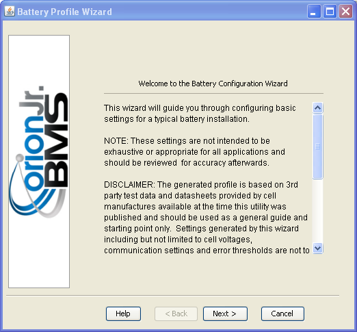

This is a guided setup wizard designed to simplify the creation of a battery profile configuration file for the particular batteries being used. Fill out the on-page instructions as accurately as possible to generate a profile.
Once completed the generated profile will automatically be loaded into the utility for review and upload.
| < Toolbar | Battery Profile > |